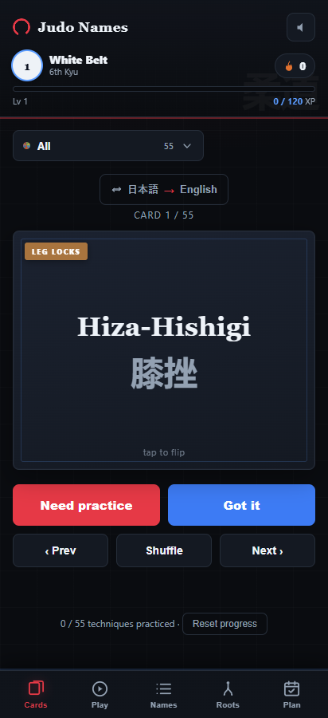
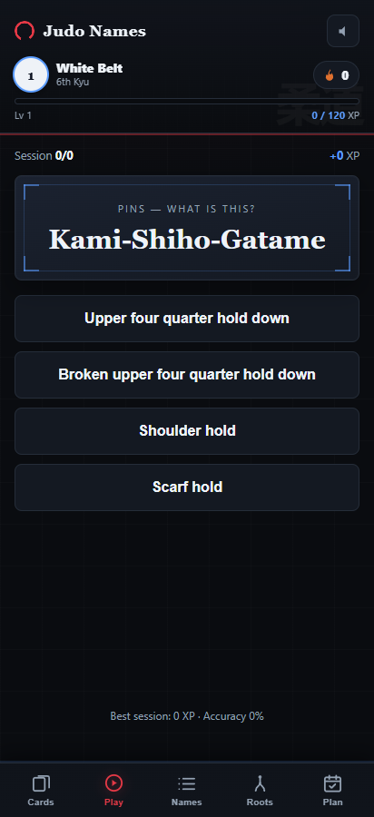
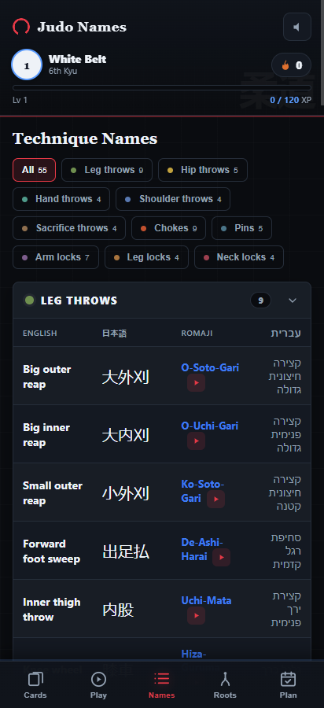

JJJ Study App
A gamified PWA that helps students at my dojo memorize Japanese Ju-Jitsu technique names in three languages — Japanese (kanji + romaji), English and Hebrew. 55 techniques across 10 families, with flashcards, a gentle XP-based quiz, belts, daily streaks, a training calendar and one-tap tutorial videos. I designed it, built it (AI-assisted, from basic coding), and shipped it as an installable app my dojo uses on the mat.



Flashcards · gentle XP quiz · trilingual technique reference — running as an installable, offline PWA.
Role
Designer & Developer (solo)
Timeline
Side project
Tools
PWA · AI-assisted build
The problem
Why it exists
Japanese Ju-Jitsu has a huge vocabulary of technique names that students are expected to know for belt exams — hard to memorize, and scattered across notes and a syllabus. I wanted a single, friendly way to drill those names, in the languages my dojo actually uses.
Design
Gamification choices
Straight game-design thinking applied to learning. Flashcards with a flip (Japanese romaji + kanji on one side; English, Hebrew and a morpheme breakdown on the other) plus a reverse-recall mode. A gentle, no-punish quiz with XP, combos and juice — a wrong answer just resets your combo, never a harsh fail. A belt ladder (White → Black Dan) and a daily streak for motivation, and a training calendar to log mat sessions and build the habit. A roots decoder breaks names into their building blocks, and official Kodokan tutorial videos are one tap away — all trilingual (Japanese · English · Hebrew), with careful attention to correct naming.
Build
Designing + shipping it myself
I built and shipped it as an installable PWA (also packaged toward an Android build) — AI-assisted, despite only basic coding. It's the same instinct I bring to game work: own a feature end-to-end, from concept to a real thing people can use.
Outcome
Results
Live and in use at my dojo — it works fully offline on the mat and updates itself whenever I ship changes. It really caught on after my own first belt exam: prepping with the app showed in the results, and students started picking it up for their own gradings. It's the study companion I wish I'd had while learning the syllabus, and the same end-to-end instinct I bring to game work: take a real need, design the system around it, and ship something people actually use.